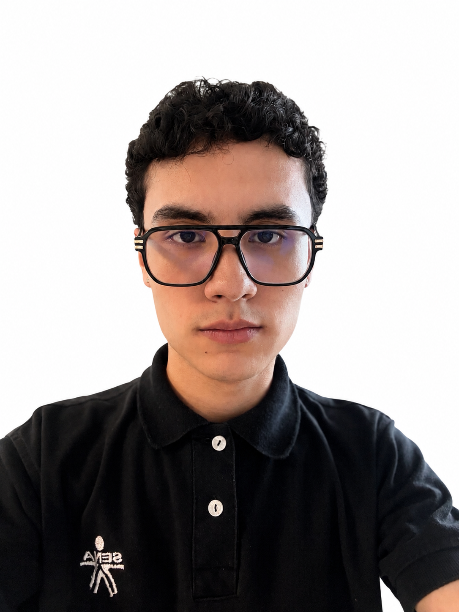

Teléfono: 3163927942
Correo: matebernal26@gmail.com
Perfil Profesional
Soy estudiante de Técnico en Integración de contenidos digitales, con interes y enfoque en la produccion audiovisual y creacion de contenido digital. Me caracterizo por ser una persona creativa, responsable y con disposicion para aprender y asumir nuevos retos. Tengo conocimiento en diseño, edicion y desarrollo de contenidos digitales, y me interesa seguir fortaleciendo mis habilidades para aportar ideas y soluciones visuales en proyectos creativos y empresariales.
- Productor audiovisual y creador de contenido:
• Desarrollo de piezas y contenidos audiovisuales para proyectos personales y academicos.
• Edicion y produccion de contenido digital, aplicando criterios de composicion, identidad visual y
comunicacion.
• Manejo de herramientas de diseño y edicion para la creacion de piezas graficas y
audiovisuales.
• Desarrollo de proyectos de identidad de marca, incluyendo conceptos visuales, paletas de color,
tipografias y propuestas de contenido.
• Experiencia en produccion y manejo de equipos de audio para eventos como DJ, fortaleciendo
habilidades de organizacion, creatividad y trabajo bajo presion.